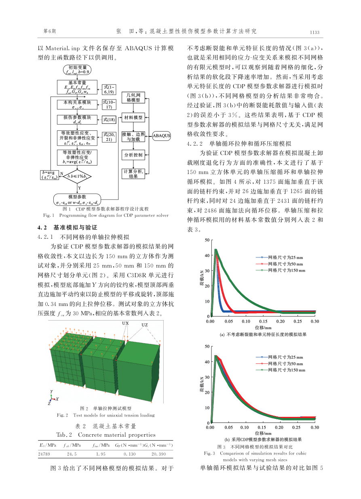
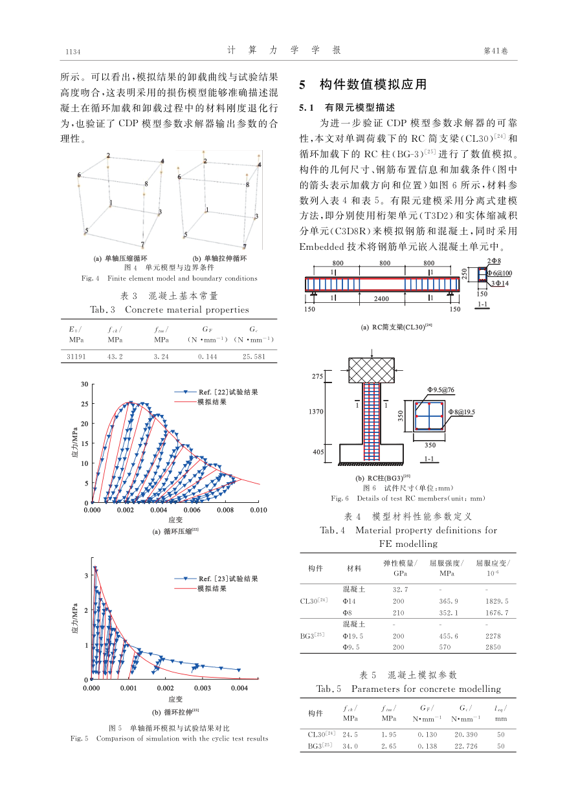
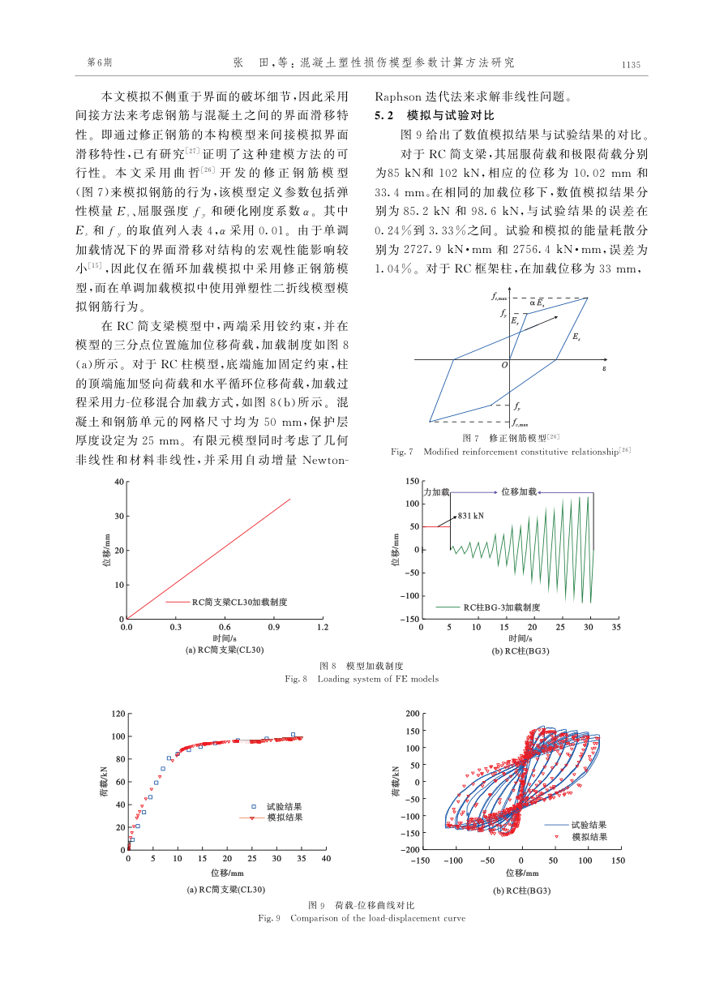
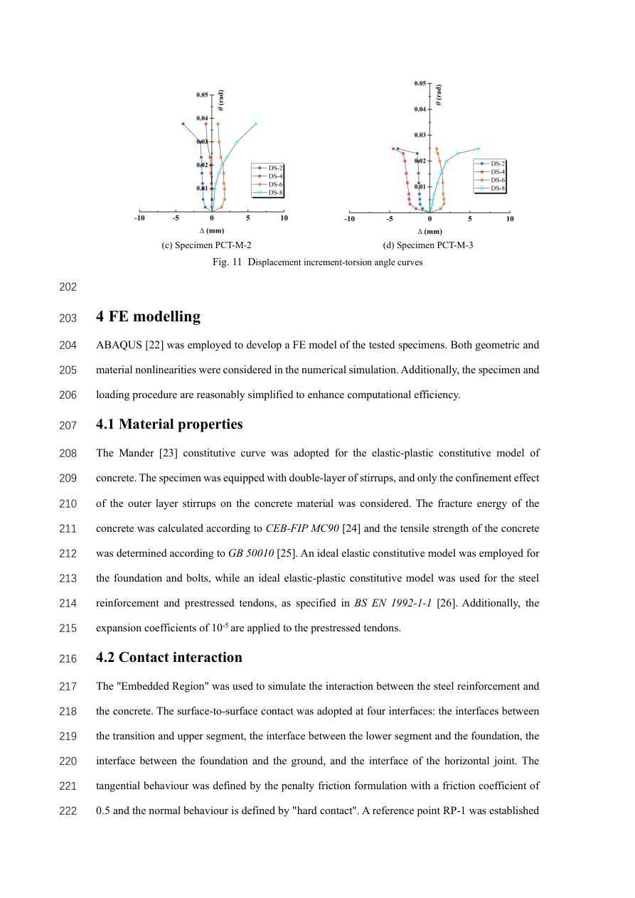
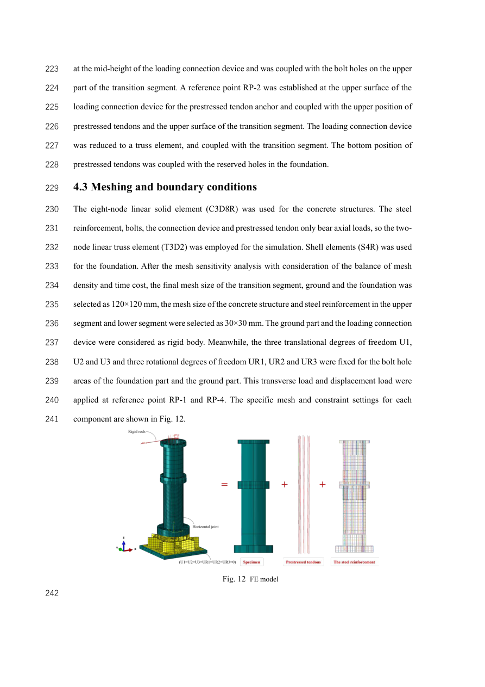
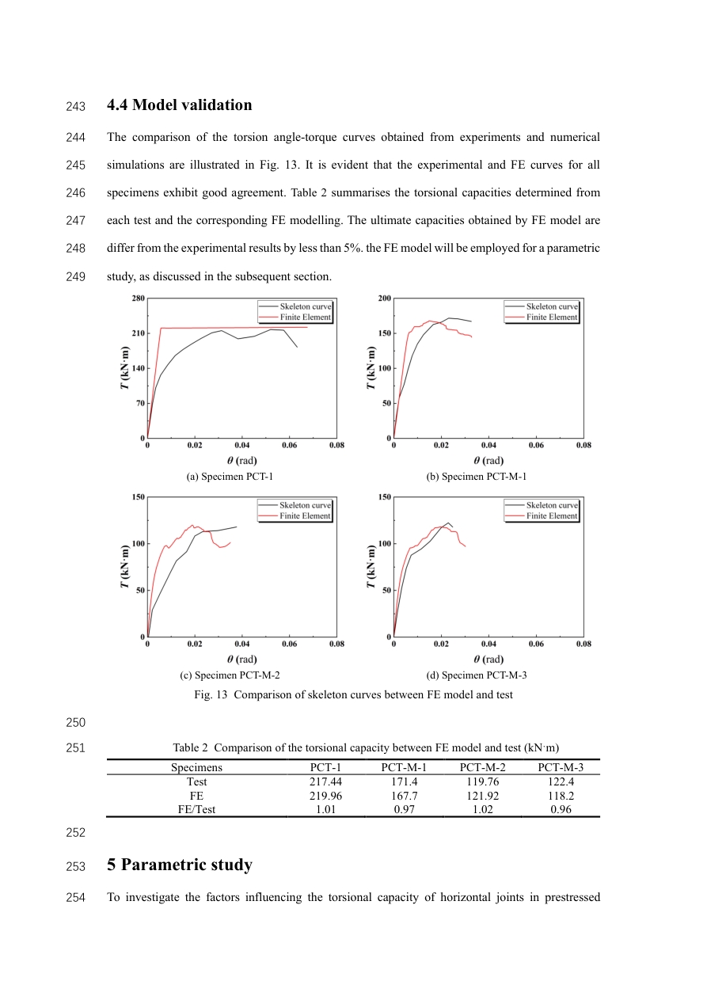
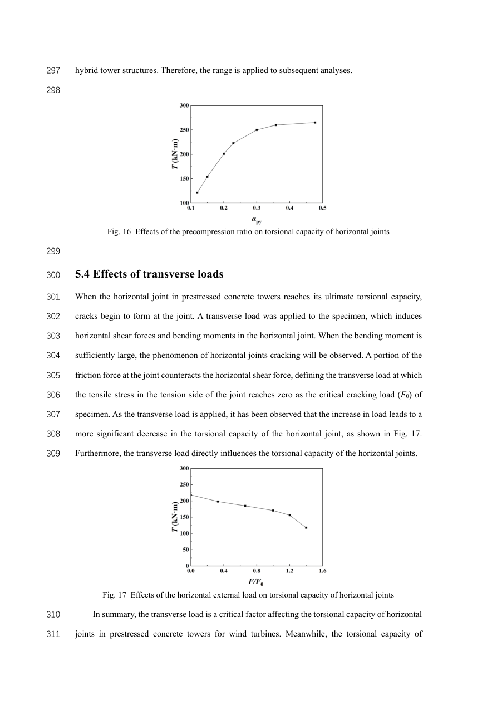

返回图件对照
两份用户提供的原始PDF，七张原页PNG；直接显示本地渲染原页，无外站图片依赖。完整论文仍以作者及出版方版权声明为准。
计算力学学报，41(6):1130–1137 · DOI 10.7511/jslx20230913003
下载完整原始PDF · 阅读原文
f5efcc4928d1db3bf133d4bb8ae6e6728900cc34eba3be4c998d49ae3b3ee5b5



Engineering Structures, 336:120443 · DOI 10.1016/j.engstruct.2025.120443 · 作者接受稿
bc2361fa5833fe909bf2c7ea48ccad13a5b85c239b7844e888012ee69644e013



